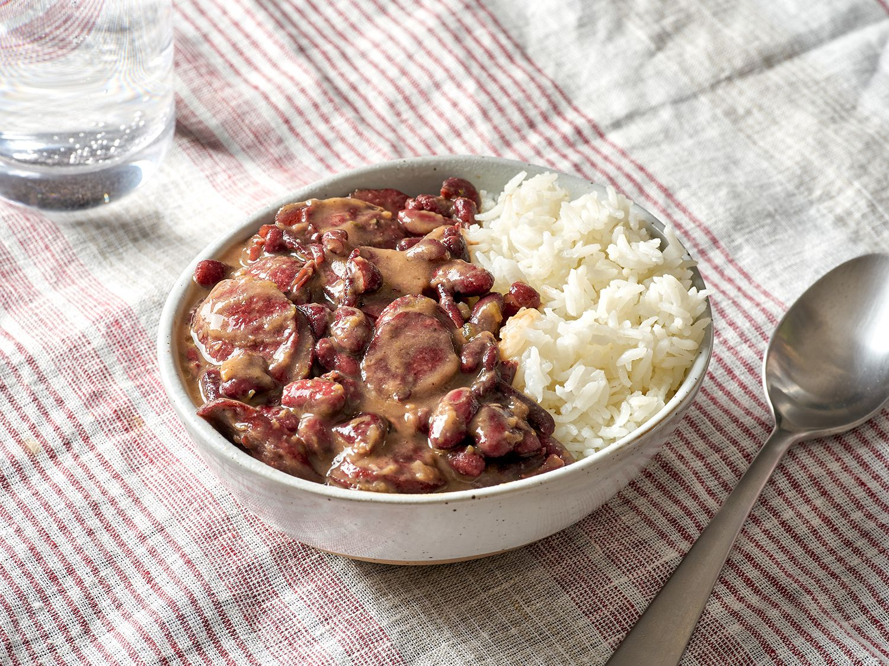

Red Beans and Rice

Description
It's beans and rice, pretty simple. People really love to make it in southeastern Louisiana.
A whole bunch of different ingredients and seasonings go into the dish to give it a complex flavor.
Ingredients
- 1.5 cups white rice
- 1 package smoked andouille sausage
- 4 cloves garlic, minced
- 1 onion, chopped
- 1 bell pepper, diced
- 2 stalked celery, sliced
- 1 pound dry red beans
- 4 cups vegetable broth
- 2 green onions
Seasonings
- 1 tsp dried oregano
- 1/2 tsp dried basil
- 1/4 dried sage
- 2 sprigs fresh thyme
- 2 bay leaves
Steps
- Chop up all of your ingredients before doing anything else.
- Turn on your instant pot to sautee and cook the sausage with olive oil for about 4 minutes. Set aside when finished.
- Using the leftover oil, sautee all of the vegetables until the onions become translucent.
- Stir the sausage back in, and add the red beans, seasonings, and broth. Add salt and pepper as needed.
- Set the instant pot to Manual on high pressure, and cook for about 45 minutes. Once the 45 minutes is up, let the pressure release passively for about 20 minutes.
- Start cooking your rice roughly 30 minutes before the beans are ready.